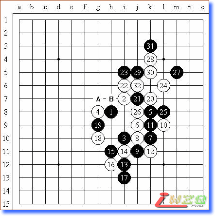
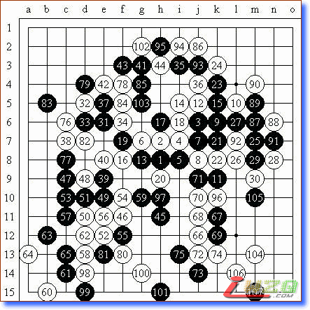
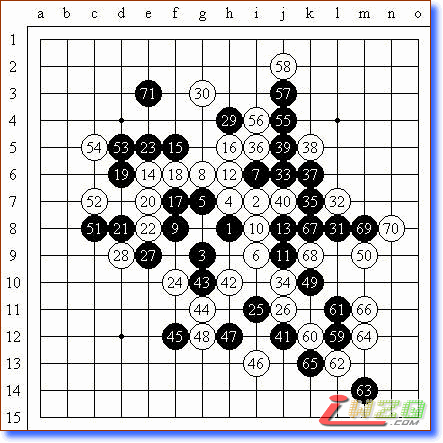

日本第7期关东连珠帝王战决胜记
#1 日本第7期关东连珠帝王战决胜记 作者：有志青年 发表时间：2007-7-9 8:28:12
2月25日，第7期关东连珠帝王战决胜三番战在臧本嗣治三段的宅邸举行。我很幸运的在二次预选赛胜出，获得向在位帝王中村茂九段挑战的资格。
第一局由中村帝王布局“岚月”，令我多少有些吃惊。交换后，中村（以下敬称略）的白4变通为“新月”，更让我吃惊。这是我在世界杯A级赛事中曾经下过的变化，自战记中也曾经对这个变化进行了介绍。作为经验丰富的中村为什么还继续选择这个变化作战，难道是要在这个黑优势的局面中考验我吗？黑5的打点在白6是必胜的，除此以外，A、B是候补的选点。实战考虑到中村的性格和丰富的技术知识，心中不免忐忑，因而考虑对黑5进行变化，意图出奇制胜。局后，中村认为“黑5的想法太突兀了”。从结果来看，实战手无疑是大失败，太后悔了。
白6走B，黑5走6后就是黑必胜的定式了。实战白6是最强的应对，以下进行到黑13双方考虑都比较稳妥。后天，贺茂五段认为进行到此有点愚型的感觉。实战至此，个人产生取胜无望的悲观情绪，于是开始后悔黑5的选择了。白14到黑17是双方势力的转折阶段。实战的黑15后白16是绝对的。由于开始阶段没有认真进行长考，前10手仅仅用了7分钟，这样就造成目前局面的为难了。而黑17又成为全局最损的一手棋。局后，久保出美五段对此进行了批评，认为黑17应当走在18位，这样及早采取守势，应当还可以继续对局。黑19以下就是极为平凡的手段了，最终速败。

第二局双方交换先后手。我布局“疏星”，中村没有交换，于是我可以开始实施我的计划。黑13是计划的第一步，这是海外征战中获得的知识，欧洲棋手非常喜欢用。想当然的期待中村长考后的白16会下17位。因为通过查阅对局记录，长谷川一人九段在第39期名人战五番棋挑战赛的第三局中采用了这个黑13，当时中村长考后下出了白14、16的妙手。实战的白16是出乎意料的手段。双方进行到黑25，尽管是黑棋有利，但是左边已经没有取胜之道了。黑31是黑棋安定右边后在左边的先招。此时双方进入胶着状态，我期待着白的无理攻击。双方进行的都很稳妥，黑45转身到下面作战。进行到53手，出现了潜在的长连禁手的隐患。白68、74、78、80、84、86是波浪壮的攻击。黑69、81、85都是唯一的防御手段。此时每一手的落下，紧张的情绪让心脏几乎承受不了。黑107考虑中，中村提出“和棋”的提议，我同意了。

第三局经过猜先，中村布局“斜月”。我提出交换。黑25到白30是思虑深远、着眼全局的微妙的攻防手段。当时个人认为自己对这个局面是经过研究和分析的，应该是具有优势的。但是通过实战，我才认识到自己对于残局知识的欠缺，以及过度的自信是最终失败的原因。黑31时可以选择31、32和67的点，都是此时的手筋。顺便提一句，斜月是中村达成名人位13连霸中出现频率比较高的一个布局，因此，中村对于这个布局的研究也是非常深厚的。实战的白32、34是强防。黑35、37是希望取胜的构思。局后，中村提出黑37可以下67位的构想。黑41是转战全局的手段。实战黑45是全局最后的取胜意识。白46是中村坚如磐石般的防守。三番胜负到现在已经处于和棋就是输的状况，目前已到了宁为玉碎的地步。但是黑65后，观战者都笑了起来，中村也是如释重负的感觉。最终，黑71后还是无奈的接受了和棋的结果。

（原文刊载于日本连珠社机关志《连珠世界》，由顾炜七段译）